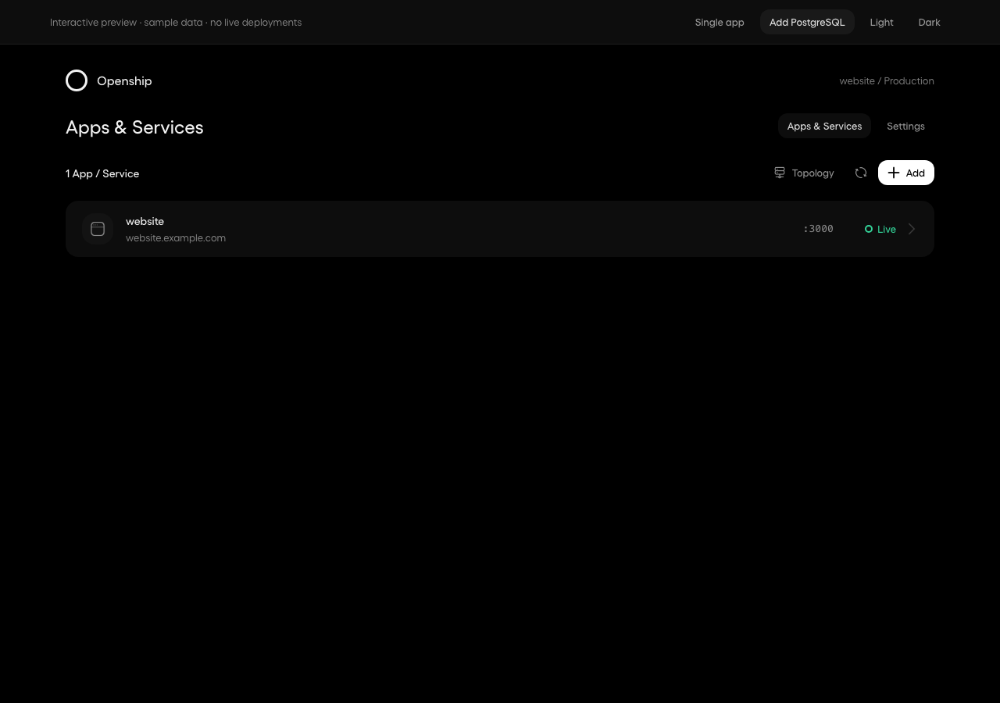
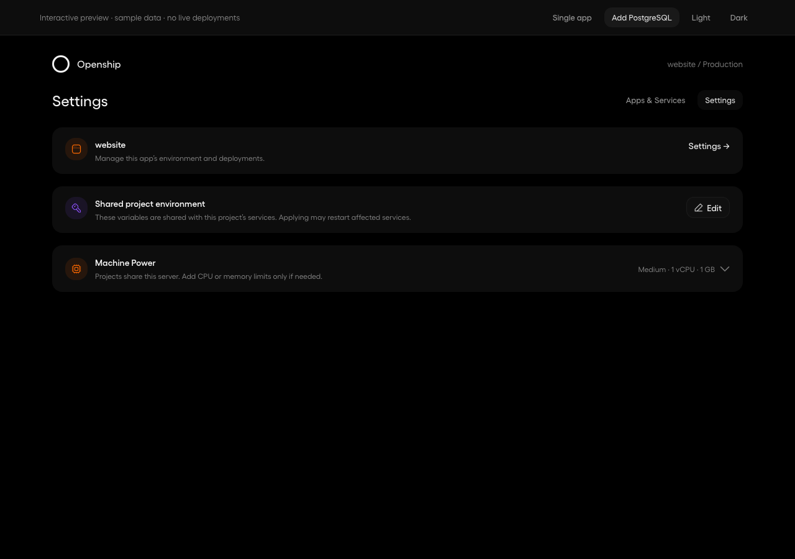

One Apps & Services flow
The app is the first row. Adding PostgreSQL adds another row. The app keeps its URL, saved environment, and detail layout.
Actual dashboard components with sample data. Saving and applying affect only the preview fixture. Existing service overrides keep their ownership.
The starting project
Before · separate application card After · the app is the first list entry
After · the app is the first list entry
When PostgreSQL is added
The real Add form was exercised in the browser check. The preview’s Add PostgreSQL shortcut opens the resulting state immediately.
The same environment editor
Save stores values. Apply starts a runtime update. Rebuild applies build-time changes. Each panel retains the actions supported by its runtime.
Before · environment in project Settings After · project Settings identifies shared inputs
After · project Settings identifies shared inputs
Themes
Mobile and Arabic
Checks: stable application route through add/remove; existing overrides preserved; separate Save/Apply; untouched secrets retained; draft retained across tabs; theme and overflow checks. Browser verification details.